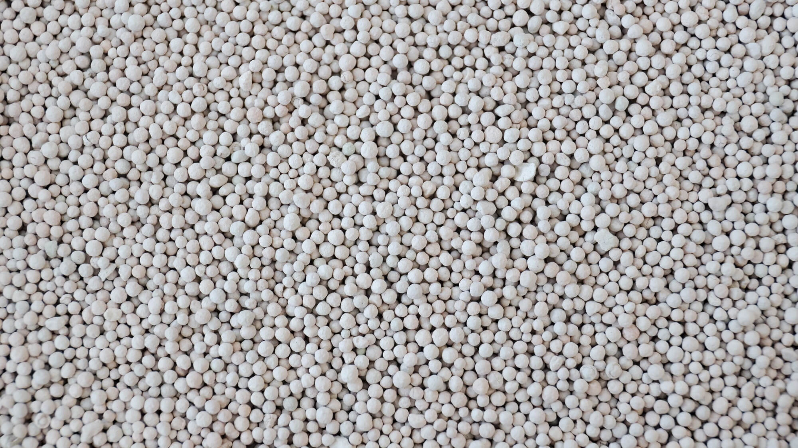

Углеродные молекулярные сита
Компания «Базис Капитал» поставляет углеродные молекулярные сита для различных отраслей промышленности. Это высокоэффективные адсорбенты, применяемые для очистки, разделения и осушки газов и жидкостей. Благодаря уникальной кристаллической структуре молекулярные сита обладают способностью селективно поглощать молекулы определённого размера.
Основные области применения сит включают: нефтегазовую промышленность, химию, фармацевтику, производство спиртов и пищевую промышленность. Они широко используются для осушки воздуха и природного газа, удаления влаги из спиртов и растворителей, а также для разделения газовых смесей.
Типы молекулярных сит
- 3A — для удаления влаги из неполярных газов и жидкостей;
- 4A — универсальные адсорбенты для различных процессов осушки;
- 5A — для разделения нормальных и изомерных углеводородов;
- 13X — для очистки воздуха, адсорбции CO₂ и сернистых соединений.
Технические характеристики
| Тип сита | Давление абсорбции (МПа) | N₂ чистота азота (%) | Производительность N₂ (м³/ч.т) | N₂ / воздух (%) |
|---|---|---|---|---|
| CMS220 (1,1-1,3 мм) | 0,75-0,8 | 95 | 420 | 2,0 |
| 97 | 340 | 2,1 | ||
| 98 | 300 | 2,3 | ||
| 99 | 260 | 2,4 | ||
| 99,5 | 220 | 2,6 | ||
| 99,9 | 145 | 3,7 | ||
| 99,99 | 100 | 4,8 | ||
| 99,999 | 55 | 6,8 |
| Тип сита | Давление абсорбции (МПа) | N₂ чистота азота (%) | Производительность N₂ (м³/ч.т) | N₂ / воздух (%) |
|---|